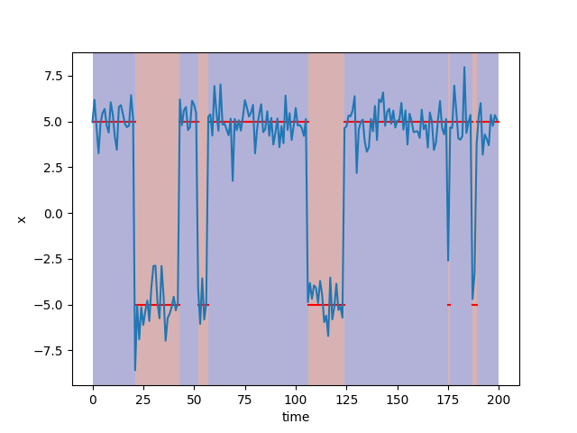

bayesml.hiddenmarkovnormal package#
Module contents#
The hidden Markov model with the Gauss-Wishart prior distribution and the Dirichlet prior distribution.
The stochastic data generative model is as follows:
\(K \in \mathbb{N}\): number of latent classes
\(\boldsymbol{z} \in \{ 0, 1 \}^K\): a one-hot vector representing the latent class (latent variable)
\(\boldsymbol{\pi} \in [0, 1]^K\): a parameter for latent classes, (\(\sum_{k=1}^K \pi_k=1\))
\(a_{j,k} \in [0,1]\) : transition probability to latent state k under latent state j
\(\boldsymbol{a}_j = [a_{j,1}, a_{j,2}, \dots , a_{j,K}]\in [0,1]^K\), a vector of the transition probability (\(\sum_{k=1}^K a_{j,k}=1\))
\(\boldsymbol{A}=(a_{j,k})_{1\leq j,k\leq K} \in [0, 1]^{K\times K}\): a matrix of the transition probability
\(D \in \mathbb{N}\): a dimension of data
\(\boldsymbol{x} \in \mathbb{R}^D\): a data point
\(\boldsymbol{\mu}_k \in \mathbb{R}^D\): a parameter
\(\boldsymbol{\mu} = \{ \boldsymbol{\mu}_k \}_{k=1}^K\)
\(\boldsymbol{\Lambda}_k \in \mathbb{R}^{D\times D}\) : a parameter (a positive definite matrix)
\(\boldsymbol{\Lambda} = \{ \boldsymbol{\Lambda}_k \}_{k=1}^K\)
\(| \boldsymbol{\Lambda}_k | \in \mathbb{R}\): the determinant of \(\boldsymbol{\Lambda}_k\)
The prior distribution is as follows:
\(\boldsymbol{m}_0 \in \mathbb{R}^{D}\): a hyperparameter
\(\kappa_0 \in \mathbb{R}_{>0}\): a hyperparameter
\(\nu_0 \in \mathbb{R}\): a hyperparameter (\(\nu_0 > D-1\))
\(\boldsymbol{W}_0 \in \mathbb{R}^{D\times D}\): a hyperparameter (a positive definite matrix)
\(\boldsymbol{\eta}_0 \in \mathbb{R}_{> 0}^K\): a hyperparameter
\(\boldsymbol{\zeta}_{0,j} \in \mathbb{R}_{> 0}^K\): a hyperparameter
\(\mathrm{Tr} \{ \cdot \}\): a trace of a matrix
\(\Gamma (\cdot)\): the gamma function
where \(B(\boldsymbol{W}_0, \nu_0)\) and \(C(\boldsymbol{\eta}_0)\) are defined as follows:
The apporoximate posterior distribution in the \(t\)-th iteration of a variational Bayesian method is as follows:
\(\boldsymbol{x}^n = (\boldsymbol{x}_1, \boldsymbol{x}_2, \dots , \boldsymbol{x}_n) \in \mathbb{R}^{D \times n}\): given data
\(\boldsymbol{z}^n = (\boldsymbol{z}_1, \boldsymbol{z}_2, \dots , \boldsymbol{z}_n) \in \{ 0, 1 \}^{K \times n}\): latent classes of given data
\(\boldsymbol{m}_{n,k}^{(t)} \in \mathbb{R}^{D}\): a hyperparameter
\(\kappa_{n,k}^{(t)} \in \mathbb{R}_{>0}\): a hyperparameter
\(\nu_{n,k}^{(t)} \in \mathbb{R}\): a hyperparameter \((\nu_n > D-1)\)
\(\boldsymbol{W}_{n,k}^{(t)} \in \mathbb{R}^{D\times D}\): a hyperparameter (a positive definite matrix)
\(\boldsymbol{\eta}_n^{(t)} \in \mathbb{R}_{> 0}^K\): a hyperparameter
\(\boldsymbol{\zeta}_{n,j}^{(t)} \in \mathbb{R}_{> 0}^K\): a hyperparameter
where the updating rule of the hyperparameters is as follows.
The approximate posterior distribution of the latent variable \(q^{(t+1)}(z^n)\) is calculated by the forward-backward algorithm as follows.
The approximate predictive distribution is as follows:
\(\boldsymbol{x}_{n+1} \in \mathbb{R}^D\): a new data point
\((a_{\mathrm{p},j,k})_{1\leq j,k\leq K} \in [0, 1]^{K\times K}\): the parameters of the predictive transition probability of latent classes, (\(\sum_{k=1}^K a_{\mathrm{p},j,k}=1\))
\(\boldsymbol{\mu}_{\mathrm{p},k} \in \mathbb{R}^D\): the parameter of the predictive distribution
\(\boldsymbol{\Lambda}_{\mathrm{p},k} \in \mathbb{R}^{D \times D}\): the parameter of the predictive distribution (a positive definite matrix)
\(\nu_{\mathrm{p},k} \in \mathbb{R}_{>0}\): the parameter of the predictive distribution
where the parameters are obtained from the hyperparameters of the predictive distribution as follows:
- class bayesml.hiddenmarkovnormal.GenModel(c_num_classes, c_degree, *, pi_vec=None, a_mat=None, mu_vecs=None, lambda_mats=None, h_eta_vec=None, h_zeta_vecs=None, h_m_vecs=None, h_kappas=None, h_nus=None, h_w_mats=None, seed=None)#
Bases:
GenerativeThe stochastic data generative model and the prior distribution.
- Parameters:
- c_num_classesint
a positive integer
- c_degreeint
a positive integer
- pi_vecnumpy.ndarray, optional
A vector of real numbers in \([0, 1]\), by default [1/c_num_classes, 1/c_num_classes, … , 1/c_num_classes]. Sum of its elements must be 1.0.
- a_matnumpy.ndarray, optional
A matrix of real numbers in \([0, 1]\), by default a matrix obtained by stacking [1/c_num_classes, 1/c_num_classes, … , 1/c_num_classes]. Sum of the elements of each row vector must be 1.0. If a single vector is input, will be broadcasted.
- mu_vecsnumpy.ndarray, optional
Vectors of real numbers, by default zero vectors. If a single vector is input, will be broadcasted.
- lambda_matsnumpy.ndarray, optional
Positive definite symetric matrices, by default the identity matrices. If a single matrix is input, it will be broadcasted.
- h_eta_vecnumpy.ndarray, optional
A vector of positive real numbers, by default [1/2, 1/2, … , 1/2]
- h_zeta_vecsnumpy.ndarray, optional
Vectors of positive numbers, by default vectors whose elements are all 1/2 If a single vector is input, will be broadcasted.
- h_m_vecsnumpy.ndarray, optional
Vectors of real numbers, by default zero vectors If a single vector is input, will be broadcasted.
- h_kappasfloat or numpy.ndarray, optional
Positive real numbers, by default [1.0, 1.0, … , 1.0]. If a single real number is input, it will be broadcasted.
- h_nusfloat or numpy.ndarray, optional
Real numbers greater than
c_degree-1, by default [c_degree, c_degree, … , c_degree] If a single real number is input, it will be broadcasted.- h_w_matsnumpy.ndarray, optional
Positive definite symetric matrices, by default the identity matrices. If a single matrix is input, it will be broadcasted.
- seed{None, int}, optional
A seed to initialize numpy.random.default_rng(), by default None
Methods
Generate the parameter from the prior distribution.
gen_sample(sample_length)Generate a sample from the stochastic data generative model.
Get constants of GenModel.
Get the hyperparameters of the prior distribution.
Get the parameter of the sthocastic data generative model.
load_h_params(filename)Load the hyperparameters to h_params.
load_params(filename)Load the parameters saved by
save_params.save_h_params(filename)Save the hyperparameters using python
picklemodule.save_params(filename)Save the parameters using python
picklemodule.save_sample(filename, sample_length)Save the generated sample as NumPy
.npzformat.set_h_params([h_eta_vec, h_zeta_vecs, ...])Set the hyperparameters of the prior distribution.
set_params([pi_vec, a_mat, mu_vecs, lambda_mats])Set the parameter of the sthocastic data generative model.
visualize_model([sample_length])Visualize the stochastic data generative model and generated samples.
- get_constants()#
Get constants of GenModel.
- Returns:
- constantsdict of {str: int, numpy.ndarray}
"c_num_classes": the value ofself.c_num_classes"c_degree": the value ofself.c_degree
- set_params(pi_vec=None, a_mat=None, mu_vecs=None, lambda_mats=None)#
Set the parameter of the sthocastic data generative model.
- Parameters:
- pi_vecnumpy.ndarray, optional
A vector of real numbers in \([0, 1]\), by default [1/c_num_classes, 1/c_num_classes, … , 1/c_num_classes]. Sum of its elements must be 1.0.
- a_matnumpy.ndarray, optional
A matrix of real numbers in \([0, 1]\), by default a matrix obtained by stacking [1/c_num_classes, 1/c_num_classes, … , 1/c_num_classes]. Sum of the elements of each row vector must be 1.0. If a single vector is input, will be broadcasted.
- mu_vecsnumpy.ndarray, optional
Vectors of real numbers, by default zero vectors. If a single vector is input, will be broadcasted.
- lambda_matsnumpy.ndarray, optional
Positive definite symetric matrices, by default the identity matrices. If a single matrix is input, it will be broadcasted.
- set_h_params(h_eta_vec=None, h_zeta_vecs=None, h_m_vecs=None, h_kappas=None, h_nus=None, h_w_mats=None)#
Set the hyperparameters of the prior distribution.
- Parameters:
- h_eta_vecnumpy.ndarray, optional
A vector of positive real numbers, by default [1/2, 1/2, … , 1/2]
- h_zeta_vecsnumpy.ndarray, optional
Vectors of positive numbers, by default vectors whose elements are all 1/2 If a single vector is input, will be broadcasted.
- h_m_vecsnumpy.ndarray, optional
Vectors of real numbers, by default zero vectors If a single vector is input, will be broadcasted.
- h_kappasfloat or numpy.ndarray, optional
Positive real numbers, by default [1.0, 1.0, … , 1.0]. If a single real number is input, it will be broadcasted.
- h_nusfloat or numpy.ndarray, optional
Real numbers greater than
c_degree-1, by default [c_degree, c_degree, … , c_degree] If a single real number is input, it will be broadcasted.- h_w_matsnumpy.ndarray, optional
Positive definite symetric matrices, by default the identity matrices. If a single matrix is input, it will be broadcasted.
- get_params()#
Get the parameter of the sthocastic data generative model.
- Returns:
- params{str:float, numpy.ndarray}
"pi_vec": The value ofself.pi_vec"a_mat": The value ofself.a_mat"mu_vecs": The value ofself.mu_vecs"lambda_mats": The value ofself.lambda_mats
- get_h_params()#
Get the hyperparameters of the prior distribution.
- Returns:
- h_params{str:float, np.ndarray}
"h_eta_vec": The value ofself.h_eta_vec"h_zeta_vecs": The value ofself.h_zeta_vecs"h_m_vecs": The value ofself.h_m_vecs"h_kappas": The value ofself.h_kappas"h_nus": The value ofself.h_nus"h_w_mats": The value ofself.h_w_mats
- gen_params()#
Generate the parameter from the prior distribution.
To confirm the generated vaules, use self.get_params().
- gen_sample(sample_length)#
Generate a sample from the stochastic data generative model.
- Parameters:
- sample_lengthint
A positive integer
- Returns:
- xnumpy ndarray
2-dimensional array whose shape is
(sample_length,c_degree). Its elements are real numbers.- znumpy ndarray
2-dimensional array whose shape is
(sample_length,c_num_classes)whose rows are one-hot vectors.
- save_sample(filename, sample_length)#
Save the generated sample as NumPy
.npzformat.It is saved as a NpzFile with keyword: “x”, “z”.
- Parameters:
- filenamestr
The filename to which the sample is saved.
.npzwill be appended if it isn’t there.- sample_lengthint
A positive integer
See also
- visualize_model(sample_length=200)#
Visualize the stochastic data generative model and generated samples.
- Parameters:
- sample_lengthint, optional
A positive integer, by default 100
Examples
>>> from bayesml import hiddenmarkovnormal >>> import numpy as np >>> model = hiddenmarkovnormal.GenModel( c_num_classes=2, c_degree=1, mu_vecs=np.array([[5],[-5]]), a_mat=np.array([[0.95,0.05],[0.1,0.9]])) >>> model.visualize_model() pi_vec: [0.5 0.5] a_mat: [[0.95 0.05] [0.1 0.9 ]] mu_vecs: [[ 5.] [-5.]] lambda_mats: [[[1.]] [[1.]]]
- class bayesml.hiddenmarkovnormal.LearnModel(c_num_classes, c_degree, *, h0_eta_vec=None, h0_zeta_vecs=None, h0_m_vecs=None, h0_kappas=None, h0_nus=None, h0_w_mats=None, seed=None)#
Bases:
Posterior,PredictiveMixinThe posterior distribution and the predictive distribution.
- Parameters:
- c_num_classesint
A positive integer.
- c_degreeint
A positive integer.
- h0_eta_vecnumpy.ndarray, optional
A vector of positive real numbers, by default [1/2, 1/2, … , 1/2]. If a real number is input, it will be broadcasted.
- h0_zeta_vecsnumpy.ndarray, optional
Vectors of positive numbers, by default vectors whose elements are all 1.0 If a real number or a single vector is input, will be broadcasted.
- h0_m_vecsnumpy.ndarray, optional
Vectors of real numbers, by default zero vectors If a single vector is input, will be broadcasted.
- h0_kappasfloat or numpy.ndarray, optional
Positive real numbers, by default [1.0, 1.0, … , 1.0] If a single real number is input, it will be broadcasted.
- h0_nusfloat or numpy.ndarray, optional
Real numbers greater than c_degree-1, by default c_degree. If a single real number is input, it will be broadcasted.
- h0_w_matsnumpy.ndarray, optional
Positive definite symetric matrices, by default the identity matrices If a single matrix is input, it will be broadcasted.
- seed{None, int}, optional
A seed to initialize numpy.random.default_rng(), by default None.
- Attributes:
- h0_w_mats_invnumpy.ndarray
the inverse matrices of h0_w_mats
- hn_eta_vecnumpy.ndarray
A vector of positive real numbers
- hn_zeta_vecsnumpy.ndarray
Vectors of positive numbers
- hn_m_vecsnumpy.ndarray
Vectors of real numbers.
- hn_kappasnumpy.ndarray
Positive real numbers
- hn_nusnumpy.ndarray
Real numbers greater than c_degree-1.
- hn_w_matsnumpy.ndarray
Positive definite symetric matrices.
- hn_w_mats_invnumpy.ndarray
the inverse matrices of hn_w_mats
- p_mu_vecsnumpy.ndarray
vectors of real numbers
- p_nusnumpy.ndarray
positive real numbers
- p_lambda_matsnumpy.ndarray
positive definite symetric matrices
Methods
Calculate the parameters of the predictive distribution.
estimate_latent_vars(x[, loss, viterbi])Estimate latent variables under the given criterion.
estimate_latent_vars_and_update(x[, loss, ...])Estimate latent variables and update the posterior sequentially.
estimate_params([loss])Estimate the parameter under the given criterion.
Get constants of LearnModel.
Get the hyperparameters of the prior distribution.
Get the hyperparameters of the posterior distribution.
Get the parameters of the predictive distribution.
load_h0_params(filename)Load the hyperparameters to h0_params.
load_hn_params(filename)Load the hyperparameters to hn_params.
make_prediction([loss])Predict a new data point under the given criterion.
overwrite_h0_params()Overwrite the initial values of the hyperparameters of the posterior distribution by the learned values.
pred_and_update(x[, loss, max_itr, ...])Predict a new data point and update the posterior sequentially.
reset_hn_params()Reset the hyperparameters of the posterior distribution to their initial values.
save_h0_params(filename)Save the hyperparameters using python
picklemodule.save_hn_params(filename)Save the hyperparameters using python
picklemodule.set_h0_params([h0_eta_vec, h0_zeta_vecs, ...])Set the hyperparameters of the prior distribution.
set_hn_params([hn_eta_vec, hn_zeta_vecs, ...])Set the hyperparameter of the posterior distribution.
update_posterior(x[, max_itr, num_init, ...])Update the the posterior distribution using traning data.
Visualize the posterior distribution for the parameter.
- get_constants()#
Get constants of LearnModel.
- Returns:
- constantsdict of {str: int, numpy.ndarray}
"c_num_classes": the value ofself.c_num_classes"c_degree": the value ofself.c_degree
- set_h0_params(h0_eta_vec=None, h0_zeta_vecs=None, h0_m_vecs=None, h0_kappas=None, h0_nus=None, h0_w_mats=None)#
Set the hyperparameters of the prior distribution.
- Parameters:
- h0_eta_vecnumpy.ndarray, optional
A vector of positive real numbers, by default [1/2, 1/2, … , 1/2]. If a real number is input, it will be broadcasted.
- h0_zeta_vecsnumpy.ndarray, optional
Vectors of positive numbers, by default vectors whose elements are all 1.0 If a real number or a single vector is input, will be broadcasted.
- h0_m_vecsnumpy.ndarray, optional
Vectors of real numbers, by default zero vectors If a single vector is input, will be broadcasted.
- h0_kappasfloat or numpy.ndarray, optional
Positive real numbers, by default [1.0, 1.0, … , 1.0] If a single real number is input, it will be broadcasted.
- h0_nusfloat or numpy.ndarray, optional
Real numbers greater than c_degree-1, by default c_degree. If a single real number is input, it will be broadcasted.
- h0_w_matsnumpy.ndarray, optional
Positive definite symetric matrices, by default the identity matrices If a single matrix is input, it will be broadcasted.
- get_h0_params()#
Get the hyperparameters of the prior distribution.
- Returns:
- h0_paramsdict of {str: numpy.ndarray}
"h0_eta_vec": the value ofself.h0_eta_vec"h0_zeta_vecs": the value ofself.h0_zeta_vecs"h0_m_vecs": the value ofself.h0_m_vecs"h0_kappas": the value ofself.h0_kappas"h0_nus": the value ofself.h0_nus"h0_w_mats": the value ofself.h0_w_mats
- set_hn_params(hn_eta_vec=None, hn_zeta_vecs=None, hn_m_vecs=None, hn_kappas=None, hn_nus=None, hn_w_mats=None)#
Set the hyperparameter of the posterior distribution.
- Parameters:
- hn_eta_vecnumpy.ndarray, optional
A vector of positive real numbers, by default [1/2, 1/2, … , 1/2]. If a real number is input, it will be broadcasted.
- hn_zeta_vecsnumpy.ndarray, optional
Vectors of positive numbers, by default vectors whose elements are all 1.0 If a real number or a single vector is input, will be broadcasted.
- hn_m_vecsnumpy.ndarray, optional
Vectors of real numbers, by default zero vectors If a single vector is input, will be broadcasted.
- hn_kappasfloat or numpy.ndarray, optional
Positive real numbers, by default [1.0, 1.0, … , 1.0] If a single real number is input, it will be broadcasted.
- hn_nusfloat or numpy.ndarray, optional
Real numbers greater than c_degree-1, by default c_degree. If a single real number is input, it will be broadcasted.
- hn_w_matsnumpy.ndarray, optional
Positive definite symetric matrices, by default the identity matrices If a single matrix is input, it will be broadcasted.
- get_hn_params()#
Get the hyperparameters of the posterior distribution.
- Returns:
- hn_paramsdict of {str: numpy.ndarray}
"hn_eta_vec": the value ofself.hn_eta_vec"hn_zeta_vecs": the value ofself.hn_zeta_vecs"hn_m_vecs": the value ofself.hn_m_vecs"hn_kappas": the value ofself.hn_kappas"hn_nus": the value ofself.hn_nus"hn_w_mats": the value ofself.hn_w_mats
- update_posterior(x, max_itr=100, num_init=10, tolerance=1e-08, init_type='subsampling')#
Update the the posterior distribution using traning data.
- Parameters:
- xnumpy.ndarray
(sample_length,c_degree)-dimensional ndarray. All the elements must be real number.
- max_itrint, optional
maximum number of iterations, by default 100
- num_initint, optional
number of initializations, by default 10
- tolerancefloat, optional
convergence criterion of variational lower bound, by default 1.0E-8
- init_typestr, optional
'subsampling': for each latent class, extract a subsample whose size isint(np.sqrt(x.shape[0])), and use its mean and covariance matrix as an initial values of hn_m_vecs and hn_lambda_mats.'random_responsibility': randomly assign responsibility to gamma_vecs
Type of initialization, by default ‘subsampling’
- estimate_params(loss='squared')#
Estimate the parameter under the given criterion.
Note that the criterion is applied to estimating
pi_vec,a_matmu_vecsandlambda_matsindependently. Therefore, a tuple of the dirichlet distribution, the student’s t-distributions and the wishart distributions will be returned when loss=”KL”- Parameters:
- lossstr, optional
Loss function underlying the Bayes risk function, by default “xxx”. This function supports “squared”, “0-1”, and “KL”.
- Returns:
- Estimatesa tuple of {numpy ndarray, float, None, or rv_frozen}
pi_vec_hat: the estimate for pi_veca_mat_hat: the estimate for a_matmu_vecs_hat: the estimate for mu_vecsLambda_mats_hat: the estimate for Lambda_mats
The estimated values under the given loss function. If it is not exist, np.nan will be returned. If the loss function is “KL”, the posterior distribution itself will be returned as rv_frozen object of scipy.stats.
- visualize_posterior()#
Visualize the posterior distribution for the parameter.
Examples
>>> from bayesml import hiddenmarkovnormal >>> gen_model = hiddenmarkovnormal.GenModel( >>> c_num_classes=2, >>> c_degree=1, >>> mu_vecs=np.array([[2],[-2]]), >>> a_mat=np.array([[0.95,0.05],[0.1,0.9]]) >>> x,z = gen_model.gen_sample(100) >>> learn_model = hiddenmarkovnormal.LearnModel(c_num_classes=2, c_degree=1) >>> learn_model.update_posterior(x) >>> learn_model.visualize_posterior() hn_alpha_vec: [153.65657765 47.34342235] E[pi_vec]: [0.76446059 0.23553941] hn_zeta_vecs: [[147.64209251 5.51848792] [ 5.51448518 42.3249344 ]] E[a_mat] [[0.96396927 0.03603073] [0.11527074 0.88472926]] hn_m_vecs (equivalent to E[mu_vecs]): [[ 1.99456861] [-2.15581846]] hn_kappas: [154.15657765 47.84342235] hn_nus: [154.15657765 47.84342235] hn_w_mats: [[[0.00525177]] [[0.02569298]]] E[lambda_mats]= [[[0.8095951 ]] [[1.22924015]]]

- get_p_params()#
Get the parameters of the predictive distribution.
- Returns:
- p_paramsdict of {str: numpy.ndarray}
"p_a_mat": the value ofself.p_a_mat"p_mu_vecs": the value ofself.p_mu_vecs"p_nus": the value ofself.p_nus"p_lambda_mats": the value ofself.p_lambda_mats
- calc_pred_dist()#
Calculate the parameters of the predictive distribution.
- make_prediction(loss='squared')#
Predict a new data point under the given criterion.
- Parameters:
- lossstr, optional
Loss function underlying the Bayes risk function, by default “squared”. This function supports “squared” and “0-1”.
- Returns:
- Predicted_value{float, numpy.ndarray}
The predicted value under the given loss function.
- pred_and_update(x, loss='squared', max_itr=100, num_init=10, tolerance=1e-08, init_type='random_responsibility')#
Predict a new data point and update the posterior sequentially.
h0_params will be overwritten by current hn_params before updating hn_params by x.
- Parameters:
- xnumpy.ndarray
It must be a c_degree-dimensional vector
- lossstr, optional
Loss function underlying the Bayes risk function, by default “squared”. This function supports “squared” and “0-1”.
- max_itrint, optional
maximum number of iterations, by default 100
- num_initint, optional
number of initializations, by default 10
- tolerancefloat, optional
convergence croterion of variational lower bound, by default 1.0E-8
- init_typestr, optional
'random_responsibility': randomly assign responsibility toxi_matsandgamma_vecs'subsampling': for each latent class, extract a subsample whose size isint(np.sqrt(x.shape[0])). and use its mean and covariance matrix as an initial values of hn_m_vecs and hn_lambda_mats.
Type of initialization, by default ‘random_responsibility’
- Returns:
- predicted_value{float, numpy.ndarray}
The predicted value under the given loss function.
- estimate_latent_vars(x, loss='0-1', viterbi=True)#
Estimate latent variables under the given criterion.
If the
viterbioption isTrue, this function estimates the latent variables maximizing the joint distribution. IfFalse, this function independently estimates the latent variables at each time point.- Parameters:
- xnumpy.ndarray
(sample_length,c_degree)-dimensional ndarray. All the elements must be real number.
- lossstr, optional
Loss function underlying the Bayes risk function, by default “0-1”. If the
viterbioption isTrue, this function supports only “0-1”. Otherwise, “0-1”, “squared”, and “KL” are supported.- viterbibool, optional
If
True, this function estimates the latent variables as a sequence.
- Returns:
- estimatesnumpy.ndarray
The estimated values under the given loss function. If the
viterbioption isFalseand loss function is “KL”, a marginalized posterior distribution will be returned as a numpy.ndarray whose elements consist of occurence probabilities for each latent variabl.
- estimate_latent_vars_and_update(x, loss='0-1', viterbi=True, max_itr=100, num_init=10, tolerance=1e-08, init_type='subsampling')#
Estimate latent variables and update the posterior sequentially.
h0_params will be overwritten by current hn_params before updating hn_params by x
- Parameters:
- xnumpy.ndarray
It must be a c_degree-dimensional vector
- lossstr, optional
Loss function underlying the Bayes risk function, by default “0-1”. If the
viterbioption isTrue, this function supports only “0-1”. Otherwise, “0-1”, “squared”, and “KL” are supported.- viterbibool, optional
If
True, this function estimates the latent variables as a sequence.- max_itrint, optional
maximum number of iterations, by default 100
- num_initint, optional
number of initializations, by default 10
- tolerancefloat, optional
convergence croterion of variational lower bound, by default 1.0E-8
- init_typestr, optional
'random_responsibility': randomly assign responsibility toxi_matsandgamma_vecs'subsampling': for each latent class, extract a subsample whose size isint(np.sqrt(x.shape[0])). and use its mean and covariance matrix as an initial values of hn_m_vecs and hn_lambda_mats.
Type of initialization, by default
'random_responsibility'
- Returns:
- estimatesnumpy.ndarray
The estimated values under the given loss function. If the
viterbioption isFalseand loss function is “KL”, a marginalized posterior distribution will be returned as a numpy.ndarray whose elements consist of occurence probabilities for each latent variabl.